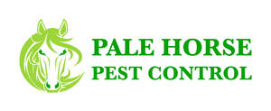

Trade Mark Journal No.2025/010 7 March 2025
UK00004163924 22 February 2025 (5,21,37,44)

- Class 5
- Repellents (Insect -); Insect repellents; Insect repellants; Pest control preparations and articles; Insect exterminating agents; Insect attractants; Fungicides for killing vermin; Nematode pesticide; Insect repellent agents; Mosquito repellents; Ectoparasite repellents; Insecticides; Insect repellents for use on animals; Insect repellent preparations; Moth repellents; Insect repellents for use on humans; Forestry (chemicals for -), [insecticides]; Agricultural biopesticides; Bird repellants; Agricultural pesticides; Forestry (chemicals for -), [fungicides]; Animal repellents; Mosquito repellants for application to the skin; Biological fungicides; Insect repellent incense; Incense (Insect repellent -); Aquatic weed killers; Domestic biopesticides; Pesticides; Tissues impregnated with insect repellents; Sandalwood for use as an insect repellent; Tissues impregnated with insect repellants; Cedar wood for use as an insect repellent; Pesticides for horticultural use.
- Class 21
- Ultrasonic pest repellers; Devices for pest and vermin control; Traps for pests; Insect traps; Traps (Insect -); Ultrasonic mosquito repellers; Insect habitats; Insect vivaria; Indoor insect habitats; Indoor insect vivariums; Traps for vermin; Indoor insect vivaria.
- Class 37
- Pest control; Extermination, disinfection and pest control; Extermination of pests; Fumigation for pest control, other than for agriculture, horticulture and forestry; Control of pests; Pest control relating to birds; Pest control services, other than for agriculture, horticulture and forestry; Pest control for residential homes; Pest control services, other than for agriculture, aquaculture, horticulture and forestry; Proofing of premises against pest and vermin access; Proofing of buildings against pest and vermin access; Infestations (Control of -), fleas; Proofing of structures against pest and vermin access; Vermin eradication [other than in agriculture]; Extermination of fungus infestation in wood; Vermin exterminating [other than for agriculture, forestry or horticulture]; Vermin exterminating other than for agriculture, forestry and horticulture; Pest control relating to buildings; Fumigation of commodities against pests; Vermin exterminating, other than for agriculture; Exterminating (Vermin -), other than for agriculture; Vermin extermination other than for agriculture; Termite control; Vermin exterminating, other than for agriculture, aquaculture, horticulture and forestry; Vermin exterminating other than for agriculture, aquaculture, forestry and horticulture; Vermin exterminating [other than for agriculture, aquaculture, horticulture and forestry]; Fumigation of buildings against pests; Vermin exterminating; Vermin killing [other than in agriculture]; Fumigation; Vermin exterminating for commercial buildings; Fumigation of commodities against vermin activity; Insecticide spraying for residential homes; Disinfection of premises against bacterial infestation; Fumigation of buildings against vermin activity; Disinfection of buildings against bacterial infestation; Insecticide spraying for commercial buildings.
- Class 44
- Pest control in agriculture; Pest control for agriculture; Pest control services for horticulture; Fumigation for pest control for agriculture, horticulture and forestry; Infestations (control of -), fleas [in agriculture]; Control of infestations of fleas in agriculture; Advisory and consultancy services relating to weed, pest and vermin control in agriculture, horticulture and forestry; Pest control services for agriculture, horticulture and forestry; Pest control services for agriculture, aquaculture, horticulture and forestry; Termite control in agriculture; Vermin exterminating for agriculture, horticulture and forestry; Exterminating (Vermin -) for agriculture, horticulture and forestry; Vermin exterminating [for agriculture, horticulture or forestry]; Insect farming services; Vermin exterminating for agriculture; Vermin extermination for agriculture; Vermin exterminating for agriculture, aquaculture, horticulture and forestry; Vermin exterminating (for agriculture, aquaculture, horticulture or forestry); Insecticide spraying for horticulture; Nuisance wildlife control services; Insecticide spraying for forestry; Insecticide spraying in agriculture; Spraying (Insecticide -) in agriculture; Insecticide spraying for agriculture; Insecticide spraying for agricultural, horticultural and forestry purposes; Fumigation in agriculture; Providing information relating to vermin exterminating for agriculture, horticulture or forestry; Rat extermination in agriculture; Weed killing for agriculture, horticulture and forestry; Vermin exterminating for agriculture, horticulture or forestry, and providing information relating thereto; Weed control; Destruction of parasites for agriculture, horticulture and forestry.
Pale Horse Pest Control Ltd